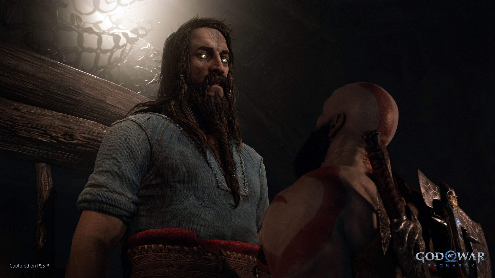
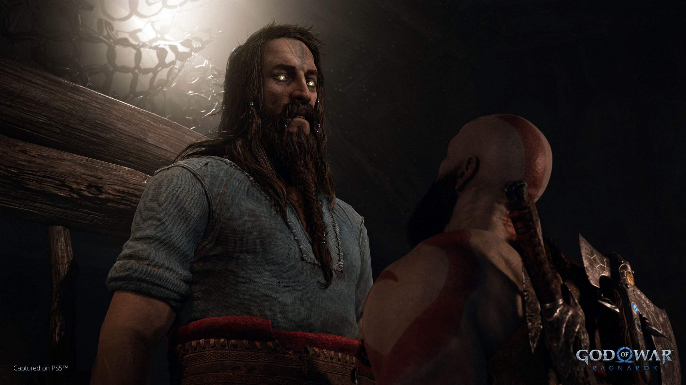

PLOT
INTRO
Fimbulwinter
In Midgard, three years after Fimbulwinter began, as Kratos and Atreus were returning home after a hunt, they were attacked by Freya, who then failed to kill Kratos. When the duo reach their home, Fenrir, one of their wolves, is close to dying; Atreus recites a funerary chant before asking his father to let him grieve for and bury the wolf. Kratos accepts and falls asleep at the house. Kratos dreams about Faye but is awoken by Mimir, who is worried since Atreus hasn't returned home from burying Fenrir. While searching for the teen, Kratos and Mimir are attacked by a bear named Bjorn. Kratos strangles the bear until it shape-shifts back to Atreus, who suddenly developed his bear powers from his intense emotions. Atreus and Kratos argue about the former's intent to learn more his "Loki" identity before returning home again. While both father and son were asleep, they were awoken by Thor, the thunder god, who asks to talk with Kratos. Odin, the chief god of Asgard, follows soon after, and makes an offer to the God of War: in exchange for him and Atreus not antagonizing the Aesir gods, Odin and Thor would also not do the same, in order to maintain peace. After they reveal that Atreus has been secretly searching for Tyr, the apparently dead war god, and after Mimir chastises Odin, Kratos coldly refuses the deal. Odin allows Thor to assault Kratos as retribution for killing Baldur, Magni, and Modi. Kratos dies from head trauma but is revived by Thor, who repeatedly tries to goad Kratos' rage so he can see the Ghost of Sparta. When Thor boasts of Odin's "plans" for Atreus, Kratos punches Thor with his full might, and the satisfied God of Thunder departs, claiming "I'll be seeing 'ya."
Freeing Tyr
Brok and Sindri encounter a wounded Kratos, who asks them for help going back to his home since Odin is still with Atreus and Mimir. Deducing that Kratos' magical protection stave is broken, Brok offers him, his son, and the head refuge in Sindri's house. Returning home, Kratos is relieved to find Atreus safe, but is angered by how the boy hid the fact that he was researching on Tyr and Loki on his own. However, seeing that this path helps in ensuring safety for Atreus, Kratos accompanies him to Skoll and Hati's Jotunn mural, which actually has a secret room inside that reveals the real fate of the two Giant wolves. The mural and Atreus' secret explorations hint in Kratos, him, and Mimir having to go to Svartalfheim, the realm of the Dwarves, to free Tyr, who is potentially still alive. After Sindri leads the trio to his home in the Realm Between Realms, he, Brok, and Mimir modifies their travel door as a new (and only way) of realm travel. The Huldra Brothers, after learning of the trio's plans to explore Svartalfheim to find and free Tyr, suggests that they go to Nidavellr, the realm's capital city, to find a government official and ex-rebel Durlin. In the Dwarf realm, after Durlin finds out that his former disgraced comrade and Kratos' wife, Faye, has already passed away, he secretly gives Atreus directions to the Jarnsmida Pitmines to find Tyr. Tyr turns out to be alive, and but has developed poor mental health and has made a vow against violence after years of torture. After Kratos yells at him to join the group, Tyr tags along, not as a soldier but at least as someone with information. They all return to Sindri's house.
Groa's shrine
Kratos, Mimir, and Tyr planned to visit Alfheim in order to see what secrets Groa's Jotunn shrine may unlock there. Atreus tags along and they face off against the Light Elves, who took control of the Light of Alfheim and its temple. Upon reaching Groa's shrine, it is revealed to an amused trio and a shocked Tyr that Groa, the sorceress, lied about the Ragnarok prophecy to Odin; instead of all nine realms being destroyed together, a "Champion" will unite the realms against Asgard and only the Aesir realm will be destroyed through warfare. Tyr is dismayed by the revelation and they return home. Tyr convinces Atreus that maybe he is the "Champion" of the Jotnar, irritating Kratos. Seeing that his father doesn't look forward to Atreus being this war hero, he retreats to his new room and suddenly wakes up in Ironwood, which is in Jotunheim.
Ragnarok
Kratos and Atreus goes their real home to grieve, and Kratos and Mimir gently tells Atreus to confront his mistakes instead running away from them. They meet up with an angry Sindri in his and Brok's former forge, and the Dwarf ends his friendship with Atreus. The trio return to Freya, who plans to mobilize the realms against Asgard. Kratos and Atreus (Mimir too, but Hildisvini takes him to Helheim to communicate with Hraesvelgr) are tasked with finding Surtr in Muspelheim, who refuses to join their forces if it means sacrificing Sinmara too in the process. However, upon seeing that Kratos' Blades of Chaos are made of primordial fire, he joins them and fuses with the Blades' fire instead of his lover.
 

REALMS AT WAR
Last Night
The father-son duo reunites with Freya in Midgard to talk about their success. Freya then tells them that the last part of their plan is to appoint a general to lead them against Ragnarok. She asks that Kratos considers the role, and he goes to his tent to rest. The Ghost of Sparta dreams of Faye yet again, who is, this time, preparing for her eventual death early on. Kratos does hot panic from the dream this time, and he accepts Freya's suggestion that he would be general of the realms. In Tyr's Temple, he and Freya deliver an impassioned speech before blowing Gjallarhorn, granting all the realms access to Asgard.
Realms VS Asgard
Asgard's forces attempt to sever their link to other realms to thin out Kratos' forces, and Atreus and Sindri opens a secret passage in Asgard's wall. Thrud attempts to kill Atreus, but is stopped by Sif and Skjoldr, who figures out that Odin is disinterested in saving his own people. Entering Asgard's city, Thor fights the younger Jormungandr and with a powerful hit, sends him back in time, just before he fights Kratos. Kratos wins, shows mercy, and convinces Thor to fight against Odin. Odin arrives at the scene quickly, and kills Thor for changing sides, just before hitting Thrud with Mjolnir.
Kratos VS Odin
Kratos, Mimir, Atreus, and then with Freya face off against the Allfather. Atreus destroys his mask mid-battle, and drags his soul to Loki's marble, which was given by Angrboda. An enraged Sindri smashes the marble, effectively killing Odin, and Surtr, now named RAGNAROK, prepares to incinerate the realm. Angrboda and Fenrir, who has Garm's powers, help Kratos and co. escape. Freyr sacrifices himself to ensure that Freya would reach Fenrir's rift in time. Asgard is destroyed.